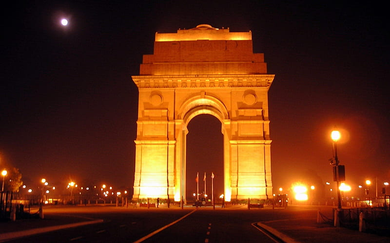
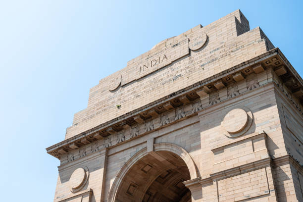
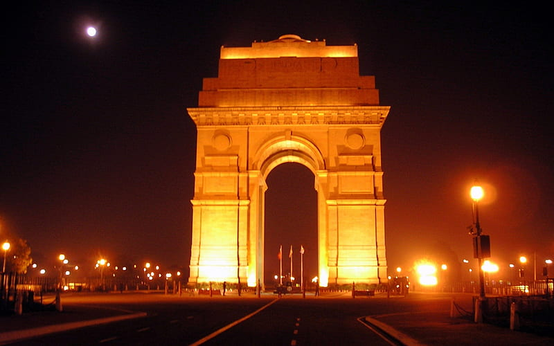
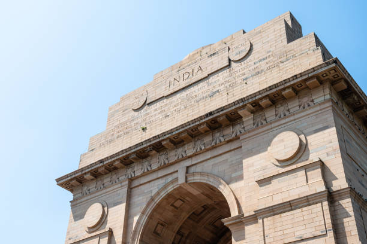

About the Indian Gate
India Gate, standing tall in the heart of New Delhi, is a majestic archway that symbolizes bravery, sacrifice, and national pride. Designed by Sir Edwin Lutyens and completed in 1931, this iconic monument honors the 70,000 Indian soldiers who gave their lives fighting for the British Army during World War I. Inscribed on its walls are the names of thousands of soldiers, immortalizing their heroic deeds. Beneath its towering arch burns the Amar Jawan Jyoti, an eternal flame that was added in 1971 to honor the unknown soldiers who sacrificed their lives during the Indo-Pak War of 1971. This flame has become a powerful symbol of India’s commitment to its armed forces. Surrounded by sprawling lawns, fountains, and tree-lined paths, India Gate is also a favorite gathering spot for locals and tourists, especially in the evenings when the monument is illuminated and the atmosphere buzzes with life. On Republic Day each year, the grand parade passes through India Gate, showcasing the country's military strength and cultural diversity. It serves as a timeless reminder of sacrifice, unity, and the enduring spirit of those who fought for peace and freedom, making it a must-visit landmark that captivates all who behold its grandeur.